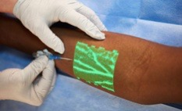
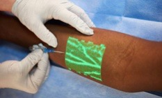

General Overview
The micro robot specializes in plaque detection and artery health in order to prevent heart related fatalities. The device is inserted into the circulatory system through a vein and can pass through any liquid regardless of the viscosity while having the ability to morph its form based on the size of the vein. It collects data on the depth of the plaque, the amounts, its location, and the speed of blood-- all which help determine the heart attack risk level. The data collected is analyzed by a cardiac specialist and relayed to the user through the application. The application allows for easy access to the results and is time efficient.
 
